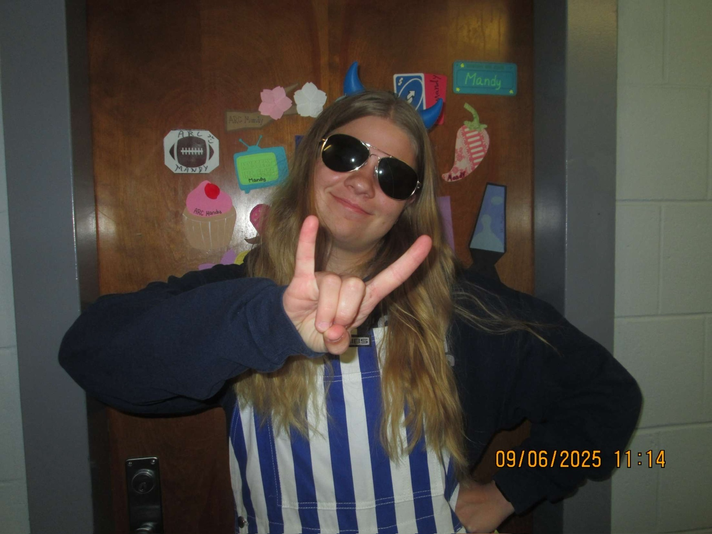

Really Get to Know Me
I think it's really important to feel like you know the person you are working with which is why I included this section! Feel free to read all about my hobbies, family, and learn more about me!
Important People in My Life

My family has always been one of my biggest sources of support and motivation. I grew up surrounded by people who encouraged creativity, hard work, and kindness—values that continue to shape who I am today. Whether we're celebrating milestones, sharing meals, or just spending time together, they’ve played a major role in helping me become the person and professional I am. Their encouragement is a big part of why I chase new goals with confidence and purpose.

My friends are a huge part of my life and have always been the people who bring energy, laughter, and balance into everything I do. They’re the ones who push me to try new things, cheer me on during big milestones, and keep life fun even when things get stressful. I’m grateful to have a circle that is supportive, honest, and always up for an adventure. Their influence has helped me grow both personally and professionally, and I’m lucky to have them in my corner.
My boyfriend has been an incredible source of encouragement and stability in my life. He celebrates my wins, supports my goals, and shows up for me in all the little day-to-day moments that matter. Whether I’m working on a new project, taking on something challenging, or just navigating busy weeks, he’s always there with patience, humor, and genuine support. I’m grateful to have someone who believes in me so consistently and who inspires me to keep growing.
My cat is the little ball of chaos and comfort that keeps life interesting. Whether he’s supervising my work from the corner of my desk, demanding attention at exactly the wrong times, or curling up beside me after a long day, he adds so much personality to my routine. He’s a constant source of entertainment, motivation, and cozy companionship—and definitely the real boss of the household.
Hobbies and Interests

Hiking
Hiking has always been a favorite pastime of mine. There's something incredibly refreshing about being surrounded by nature, breathing in the fresh air, and taking in the beautiful landscapes. Whether it's a challenging trail or a leisurely walk through the woods, hiking allows me to disconnect from the hustle and bustle of daily life and reconnect with myself. It's also a great way to stay active and explore new places.
Sewing
Sewing is a creative outlet that I truly enjoy. There's something satisfying about taking a piece of fabric and transforming it into something beautiful and functional. Whether I'm working on a simple project or a more complex design, sewing allows me to express my creativity and attention to detail. It's also a relaxing activity that helps me unwind and focus my mind. Plus, I love the sense of accomplishment that comes with completing a sewing project!
Games
Playing video games has always been one of my favorite ways to relax. My favorite game is Minecraft and I typically play on PC or Playstation. My roommate and I actually have a world that we have played on for the entire time that we've known each other! The map shown is from that world, showing off three years of our work.